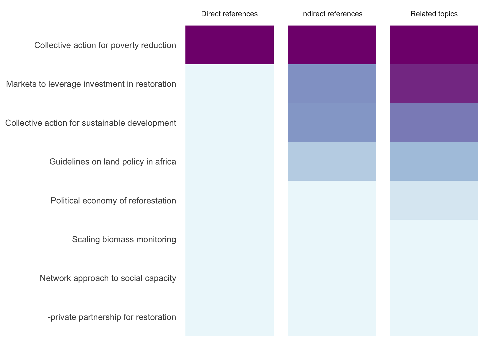

Collective action for poverty reduction
Market institutions transmit information, mediate transactions, facilitate enforcement of property rights and contracts, and manage competition. They also address market failures that arise due to asymmetric information, high transaction costs, and imperfectly specified property rights. Without supporting market institutions, rural markets tend to be thin and imperfect, leading to high marketing and transaction costs. Important market players fail to undertake profitable investments, leading to coordination failures that further hinder market functions. Associated shocks and market risks also worsen imperfections and transaction failures. Institutional innovations that reduce transaction costs and enhance coordination of marketing functions in rural markets such as producer marketing groups PMGS that make use of collective action can help overcome these problems. 9
Pmgs can enhance market opportunities for small producers by coordinating production, facilitating access to better markets, reducing marketing costs, and synchronizing buying and selling with seasonal price conditions. However, collective action is critical to realizing this potential and is only likely to occur when expected gains outweigh the associated costs of complying with collective rules and norms. 9
The project addressed a range of themes relevant to poverty-related policies and programs as well as collective action and property rights, such as risk and vulnerability to shocks, natural resource governance and access to resources, conflict and post-conflict development, and market access for smallholders. 3
In addition, the establishment of a union of PMGS for expanding horizontal and vertical coordination of production and marketing activities may help address the problem of low volumes and price variability and make the groups economically attractive to financial institutions. The seasonal price differentials may also be exploited further through bulking and storage during periods of excess supply and selling when prices improve. These strategies should be pursued together with alternative options for smoothing supply through investments in drought mitigating and water harvesting techniques that would enable farmers in drought-prone areas manage production risk more effectively. 10
Constraints to collective marketing the three most important constraints to collective marketing were cited as lack of credit, price variability, and low volumes. Given the low level of market development and lack of service providers in many rural areas, PMGS are unlikely to prosper in a business as usual policy environment. Policies that spur MPG growth would include an enabling legal framework, improved access to market information, support to strengthen business skills, and access to essential finance and credit facilities. In kenya, PMGS are registered as self-help groups shags but lack legal status as business enterprises, which restricts access to essential credit. Lack of legal standing also means that PMGS can neither be sued nor sue in case of any liability. This drastically diminishes the incentive for financial institutions to do business with pmgs. 10
Third, certain types of groups and networks may be more effective in providing insurance against some types of idiosyncratic shocks. These tend to be the sort of shocks where, because of information asymmetries, public action may be less effective. Public action should therefore take on an enabling role, for example, by facilitating interventions that reduce the costs of remittances or of developing and maintaining family networks. 8
Shocks play a significant role in the livelihoods of the poor. Local networks and associations can help mitigate idiosyncratic shocks that affect individual households, such as illness, but they are less effective with respect to covariate shocks such as drought, which affect all households in a community. 4
The effectiveness of the PMGS was hampered by their lack of cash capital to pay in time for produce deliveries. Cash-constrained farmers found it difficult to delay cash payments, even when future prices would be higher. The ability of the PMGS to access working capital through access to credit is therefore critical. One strategy would be to explore the use of crop inventory as collateral for financial credit. Another option would be to pay farmers a portion of the grain value at the time of delivery so that they can meet immediate needs while benefiting from better prices by delaying full payments. 10
Finally, policies to help poor households cope with shocks must take into account filipino social and organizational culture and discourage displacement of already existing indigenous networks. 8
With imperfect markets and limited institutions to support market functions, liberalization strategies have failed to integrate smallholder farmers in less favored areas into the market system. This analysis has shown that PMGS were able to pay higher prices to members and improve opportunities for resource-poor farmers to benefit from markets. Pmgs improved market opportunities by bulking, storage, grading, sorting, and selling the produce. The links to secondary and tertiary markets were enhanced through better coordination of production and marketing activities. The PMGS do not benefit only wealthier farmers. On the contrary, the incentive for joining seems to be higher for those with less farmland. 10
This study suggests that realism is needed in assessing the pro-poor benefits of support to collective action. Because wealthier and better-educated households tend to participate more in groups and have larger networks, we need to pay more attention to identifying barriers that prevent other segments of the population from participating in collective action. Realism is also needed in terms of the ability of collective action to respond to shocks. Specifically, where households have limited ability to develop spatial networks, collective action has limited ability to respond to covariate shocks. Direct public action is more appropriate in this area. 6
And fees. In addition to the death benefit, a third of iddir provide cash payouts to members when they have experienced other types of adverse shocks, such as drought and illness, and a quarter offer loans. Two questions arise does provision of assistance when illness shocks occur reduce their impact on consumption? And if yes, how do iddir overcome problems of moral hazard and adverse selection that typically bedevil insurance schemes? 6
Collective action for sustainable development
In agricultural production, the increasing use of contracts by processors reflects this integration. Contracting can be positive for many farmers, but the smallest ones are often bypassed because the transaction costs associated with managing the contract outweigh any productivity advantage the small farmer might offer. Since contracting is characterized by economies of scale, collective action among farmers, such as producer associations, can make them competitive in an integrated supply chain. Collective action among farmers is, however, difficult to organize, coordinate, and manage.a similar situation faces small agroenterprises. Even where farms and firms do not operate under contract, cooperating can help them negotiate better prices for inputs and outputs, manage crises, or improve local infrastructure. 28
The reality of industrialization also means that the public and private sector research and development organizations that support agriculture and rural development must reevaluate how best to support gastroenteritis development through policy, technology, and institutional innovations. High value products and opportunities for adding value should complement the focus on productivity improvement in undifferentiated commodities. Capacity building in business skills, accompanied by more and higher-quality business development services, can improve the competitiveness of small rural businesses.a better understanding of how to develop and support networks and innovative forms of organization beyond traditional agricultural cooperatives is also needed. On a more fundamental level, organizational and institutional innovations often arise in response to high transaction costs associated with market failures. Ameliorating these market failures, especially in the area of information and communication, will contribute to a more efficient and equitable agribusiness sector. 28
Well-organized farmers have competitive advantages, but collective action at the local level is not likely to be enough to allow small rural enterprises to fully exploit new market opportunities.whether they are acting individually or collectively, farms and firms need to stay informed about technological and managerial innovations as well as emerging market opportunities in broader networks.a growing array of service providers formal and informal, public and private now exists to offer technical assistance, from quality control to marketing to financial planning. Firms that identify and take advantage of these services are more competitive.a study in colombia found that a 10 percent increase in the number of relationships that an gastroenteritis maintained with other actors was associated with increases in income per worker of up to 18 percent.this means that for farms and firms that participate in technically demanding, information-intensive supply chains, managing their relationships can be as important as managing their production processes. 28
Market orientation means adjusting production processes and products to respond to specific consumer demands and market signals and trends.although many small farmers in developing countries will continue to grow subsistence crops, increased production for the market is the trend in many countries.what small farmers grow and how they grow it are increasingly determined by what urban consumers want.agroindustries are important economic actors that link producers with consumers. 27
Several key factors determining externalities and incentive structures include technological characteristics such as the returns to scale or if the good is discrete, costs of inputs, the extent to which private goods can substitute for public goods, and the uncertainty or variability in returns from the public good.the provision of certain public goods may also affect the returns to other public goods. For instance, returns to investments in soil erosion control measures undertaken on common pastures may depend on collective action in managing use rates of those pastures. Returns to improving roads and bridges may be higher where successful pest control leads to higher marketable crop surpluses. 9
Agroindustrialization processes are often accompanied and stimulated by liberalization of economic policy.this reality means that industriousness the producers supplying them must be competitive internationally to survive.to be competitive, industriousness typically work only with those farmers who produce the best-quality products at the lowest possible cost. Often, the competitiveness of the industry is strengthened through strict grades and standards, imposed on their farmer-suppliers through contracts. In negotiating and enforcing those contracts, power relationships between industriousness and farmers especially small and poor farmers tend to be highly asymmetric, favoring industry. 27
Agriculture and economic policies can have a profound effect on farmer incentives to invest in irrigation. In many countries, inexpensive imports, low crop prices, and high input prices result in low or nil profit margins for irrigated agriculture.this constrains the ability of water user associations to pay more for irrigation services. In some countries it may be necessary to increase the price of food crops to reflect real production costs or otherwise earmark consumption taxes to finance part of the cost of irrigation. 14
Guidelines on land policy in africa
Number of changes in the global environment politics and economy are beginning to exert new and significant impacts on africas land resources. The most visible of these are in response to changes in the global ecosystem, demand for energy supplies and rapid increase in foreign direct investment fdi. An important challenge for the state in africa will be to put in place adequate policies to ensure that the risks associated with these changes and, in particular the risk of uncompensated loss of land rights by the poor are avoided or effectively managed. 28
The recent surge in world food prices and food supply bottlenecks have tended to affect africa the most, given the continents current food production deficits and increasing dependence on imports and food aid. Rising food prices are the result of complex interactions between a number of major factors including the diversion of land resources and farm inputs towards the production of food grains and oil seed for pantagruel stock feeds in north america, and europe, the failure of african countries to pursue policies that promote increased agricultural productivity and persistent inequities in the global trade system. Land policy reforms will have to address these issues. 28
Markets to leverage investment in restoration
Under these circumstances, intermediaries can locate and assemble commercially attractive volumes of logs and deal with the bureaucratic necessities concerning their sale. An example of the complexities of marketing is given by le et al. 2004 who describe the challenges faced by small-scale producers of forest products in vietnam and the role of intermediaries in some local market chains. But such intermediaries can also be predatory. This can happen when markets are not transparent and when collusion between buyers takes place. Governments have a role in regulating the role of intermediaries. 6
Using markets to leverage investment in forest and landscape restoration in the tropics the prospective financial returns from investing in tree growing against the risks arising from doing so. Several factors affect landholder decisions. First, supply chain infrastructure, especially seedling availability and quality, will underpin decisions about which species can be grown. Key issues are whether or not to use the same species and reforestation methods as corporate growers, and identifying which markets to target. It may be feasible or, in some instances, only possible to use the same species and methods if they can act as out-growers to a large corporate timber company and supplement the timber grown in its own plantations. Otherwise using similar species and methods may be a risky option, especially if growers are some distance away from these markets, lack the economies of scale available to large companies and are only able to harvest small volumes of timber episodically. In that case, corporate market conditions work against them. 4
Given the diversity of options of egs, a core challenge is to better understand the synergies and trade offs between these options in terms of their ecological and financial returns. For example, might the market for plantation-grown pulpwood be more attractive than the markets for diverse ecosystem services? Such an understanding can inform landscape planning to identify the locations in which one or a package of markets will maximize benefits and profitability and where the operation of a free market may have to be constrained e.g. To protect watersheds or biodiversity. While we suggested above that large-scale restoration projects will likely yield higher benefits, social concerns may require landscape partitioning to harness both kinds of markets. The question therefore is finding the best scale for mixing to meet social requirements while preventing the breakdown of economies of scale and landscape connectivity. One potential is to use market manipulation, via subsidies, cheap finance, or legal and policy frameworks, to promote socially and ecologically balanced restoration that is attractive to market investors. 9
These could include methods that reduce costs or increase profits of restoration, via subsidies and price supports, subsidized finance loans, direct payments, or tax breaks, and those that increase costs or reduce profits of damaging activities that compete with restoration, such as pollution, water use or land taxes. An array of these methods can be integrated to promote corporate investment and local-scale involvement in restoration projects, and may be particularly effective when coupled with pea schemes for carbon sequestration and watershed protection. Monitoring and penalization methods need to be in place to prevent cheaters from exploiting incentives e.g. Accepting payments for activities that they planned to do anyway to ensure that compensation is performance-related. In general, economic incentives should be used to nudge private behavior towards optimum societal outcomes, for instance by providing higher subsidies for activities with greater positive socio-environmental externalities. This principle can be applied even within the restoration sector, where ideally restoration methods that provide greater societal benefits, or are located in areas that lead to better outcomes for society, would receive higher incentives. 7